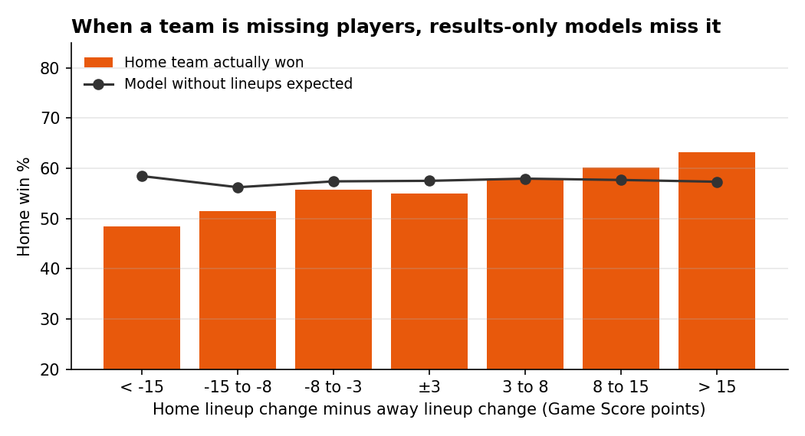
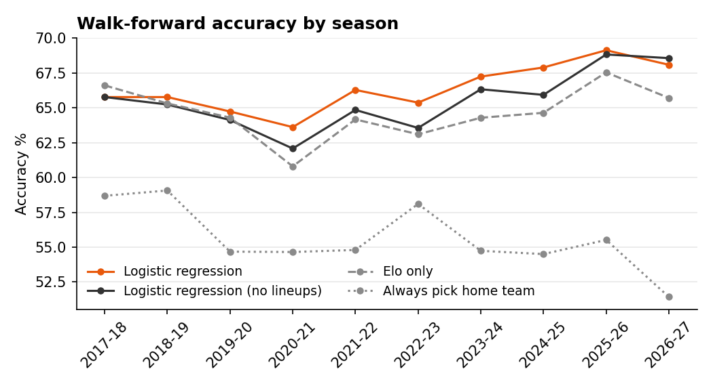
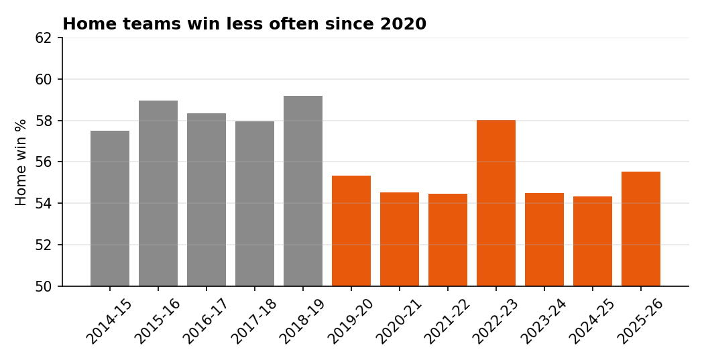
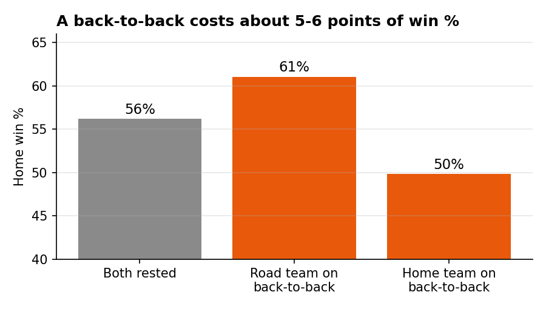
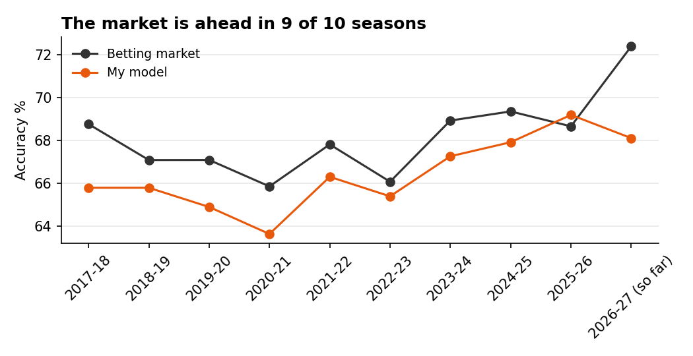

I built a model that picks NBA winners and tested it on about 11,750 games it had never seen. Here's what mattered, what didn't, and where it still falls short.
The data is every game since 2014-15: final scores and the schedule from Basketball-Reference, plus player box scores from ESPN. For each game the model only gets information from before tip-off. That includes team ratings, records, recent form, rest, and which players are available. It outputs the probability that the home team wins.
To score it honestly I used walk-forward testing. To predict the 2021-22 season, the model trains on 2015-16 through 2020-21 and nothing later. Then it moves forward a season and repeats. A lot of sports models quietly train on the future, for example by using full-season averages, and their accuracy looks great until they have to predict tomorrow.
| Model | Accuracy | Log loss |
|---|---|---|
| Always pick the home team | 56.0% | 0.686 |
| Elo rating only | 64.6% | 0.634 |
| Logistic regression, team stats only | 65.3% | 0.622 |
| Gradient boosting, with lineups | 65.6% | 0.618 |
| Logistic regression, with lineups | 66.3% | 0.613 |
| Betting market (for comparison) | 67.8% | 0.598 |
Walk-forward results, 2017-18 through November 2026 (11,753 games). Log loss scores the probabilities, not just the picks; lower is better. The betting market row covers the 11,741 of those games with a betting line.
Elo, the rating system from chess, gives every team one number. Beat a good team and your number goes up a lot; lose to a bad one and it drops. With a home-court bonus, a boost for blowout wins, and some regression toward average each summer, that one number picks 64.6% of games correctly.
Everything else I added (season record, last-10 form, rest) only bought another 0.7 points. That says something about basketball: a team's level is fairly stable, and most of what's left is noise. Even the best public models top out at roughly 68-70%.
A model that only sees scores has no idea when a star sits out. So I rated every player by his average Game Score over his last 20 games and added up each team's best eight available players. The key feature compares tonight's lineup with the team's usual lineup over its last 10 games. Losing your best player is a big negative, getting him back is a big positive, and a player out for a month stops counting as news.

The chart shows why this matters. When the home team is missing a lot more talent than usual, it wins only 48% of the time, yet the model without lineups still expects about 58%. When the visitors are the depleted ones, home teams win 63%. Adding lineups raised accuracy from 65.3% to 66.3% and improved log loss nearly as much as all the other team stats on top of Elo combined.

One honest caveat. For past games I know who actually played, but the live site only knows the injury report a few hours before tip-off. Late scratches and game-time decisions probably make the real-world gain a bit smaller than the backtest shows. To handle that, "questionable" players count as half available on the live site.

Home teams won 58.4% of games in the five seasons before 2019-20 and 55.1% since 2020-21. The 2020 bubble, with no crowds and no travel, made home court basically disappear. It never fully came back. Possible reasons include less travel fatigue, better sleep and recovery science, and the three-point era making games more random. My data can't tell those apart, but the drop is clear. It also means a model trained on older seasons slightly overrates home teams today, which is one reason the home-only baseline looks worse in recent years.

When both teams are rested, the home team wins 56% of the time. Put the visitors on the second night of a back-to-back and that rises to 61%. If the home team is the tired one, it drops to 50%, a coin flip. That's one of the cleanest effects in the data, and the model gives it real weight.
The real benchmark for a sports model isn't "always pick the home team". It's the betting market. I pulled every sportsbook's final pre-game moneyline from ESPN for each game, removed the bookmaker's cut, and took the median. That gives the market's probability that the home team wins.

The market picked 67.8% of winners against my 66.3%, and its probabilities are better too (log loss 0.598 vs 0.613). My model and the market pick different winners in about 1 game in 9, and in those games the market is right 57% of the time. I also tried blending the two, training on earlier seasons to find the best mix. It put essentially no weight on my model, which means the market already knows everything my model knows.
The silver lining is that adding lineups closed about 40% of the gap between my original model and the market (log loss 0.622 → 0.613, vs the market's 0.598). The market's remaining edge probably comes from what a box-score model can't see: exact minutes restrictions, matchups, and news that breaks an hour before tip-off.
A bug worth admitting. My first betting simulation said the model made a 5% profit. A model that adds nothing to the market can't beat it, so I went looking. The culprit was how I averaged odds across sportsbooks. I took the median of American odds directly, but that scale jumps from +100 to −100, so a game listed at −116 by some books and +100 by others "averaged" to −1, which pays out 101 to 1. After fixing it (averaging in probability space), betting on my model's edges loses about 6.5%. It also loses more the bigger the supposed edge, the classic sign that when you disagree strongly with the market, you're usually the one who's wrong.
The live site posts a pick for every game each morning, with a breakdown of why, including who's injured and what Vegas thinks. Its live record is tracked against the market's on the same games. All the code is on GitHub, and one command rebuilds every number in this post.